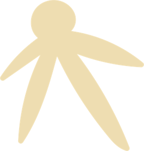
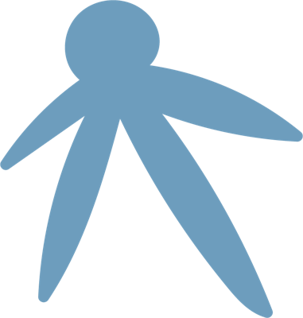
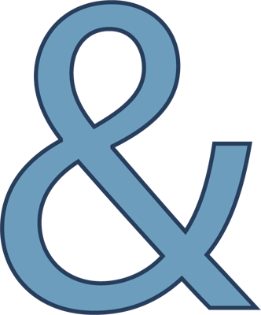
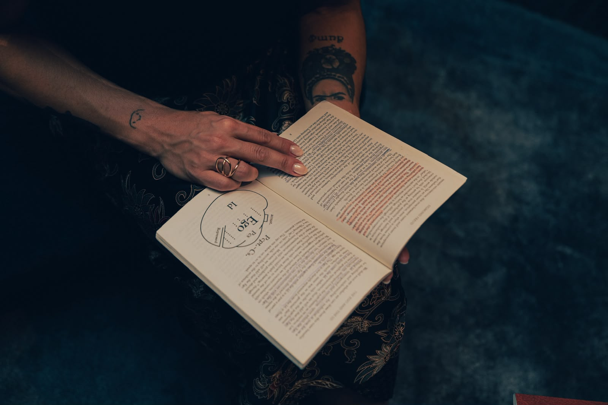
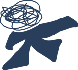
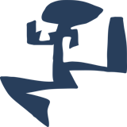
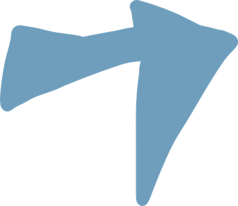

Um espaço para escutar o que existe por trás do que sentimos.

Beatriz Schutz · Psicanálise
Entrar em contatoEscuta psicanalítica
Um momento para falar livremente, acolher o que emerge e descobrir novas possibilidades para a própria história.
Um espaço seu
Sessões individuais online, com privacidade e uma escuta atenta à sua história, respeitando seu tempo e sua singularidade.
Português e inglês
Sessões no idioma em que você se sente mais à vontade.
Para quem é esse espaço
Acolho pessoas que atravessam conflitos emocionais, dificuldades nos relacionamentos, ansiedade, sentimentos de vazio, mudanças de vida, experiências de imigração, a sensação de não pertencimento ou também quem busca apenas se conhecer melhor.


Sou Beatriz Schutz
Sou Beatriz Schutz, brasileira e psicanalista. Após dez anos vivendo fora do Brasil, desenvolvi uma sensibilidade particular às transformações emocionais que acompanham as mudanças de vida, as relações e a busca por se entender no mundo.
Meu trabalho oferece um espaço para desacelerar, explorar o que você sente e dar sentido a experiências que nem sempre conseguimos colocar em palavras.

Corpo e emoção
Acredito que nossas experiências emocionais e físicas estão profundamente conectadas. Além do que pensamos e sentimos, podemos também olhar para o que acontece no corpo:
- Respiração curta

Dores de cabeça recorrentes- Tensões

Limitações de movimento
Essas experiências podem fazer parte de uma história maior, e explorá-las em conjunto pode nos ajudar a compreender como chegamos até aqui.
Um espaço que é seu.
- Atendimentos individuais e privados
- Online, em português ou inglês
- Sem julgamentos, no seu tempo
A psicanálise é um convite a falar livremente, sem precisar organizar os pensamentos ou encontrar respostas prontas. Na fala, até aquilo que parece desconexo, esquecido ou difícil de nomear pode encontrar espaço.
Aos poucos, podemos reconhecer padrões que se repetem, compreender conflitos que atravessam nossas relações e explorar como nossa história influencia a maneira como sentimos e vivemos. Não se trata de encontrar respostas definitivas, mas de abrir espaço para novas formas de compreender a si mesmo.

Você não precisa ter tudo compreendido antes de começar.
Às vezes, basta sentir que algo precisa de atenção.
Você pode entrar em contato quando sentir que é o momento.